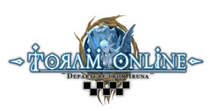

⚔️
Quest Clear
Member menyelesaikan misi Toram atau guild task, lalu claim agar progres petualangan masuk ke database Noir.

Inspired CommunityCommunity profile untuk guild Aqua Mirage: tempat member Toram berkumpul, mengambil quest, menaikkan rank, mengumpulkan Spina, dan menampilkan progres petualang melalui bot Noir.
Aqua Mirage dibuat sebagai base camp komunitas Toram Online dengan sistem progres yang jelas, rapi, dan terasa seperti guild adventurer sungguhan.
Member menyelesaikan misi Toram atau guild task, lalu claim agar progres petualangan masuk ke database Noir.
Leaderboard Top Spina menampilkan member dengan koleksi Spina tertinggi sebagai simbol kontribusi dan kemajuan ekonomi guild.
Sistem rank membantu member melihat posisi mereka, dari petualang baru sampai tier tertinggi di Aqua Mirage.
Noir adalah admin bot resmi Aqua Mirage. Noir membantu pendaftaran member, pencatatan quest, claim progress, rank, Spina, dan data leaderboard agar komunitas Toram lebih tertata.
Ranking realtime dari database bot: Top Quest Clear, Top Tier, dan Top Spina.